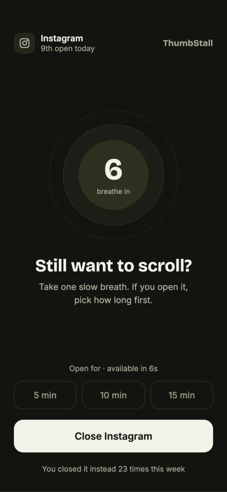
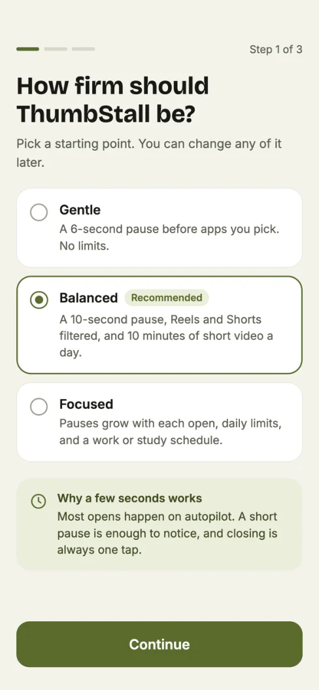
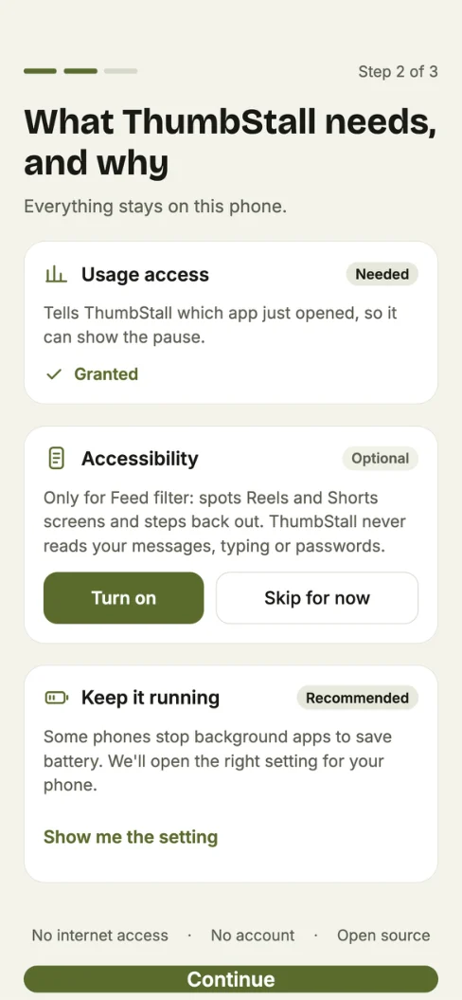
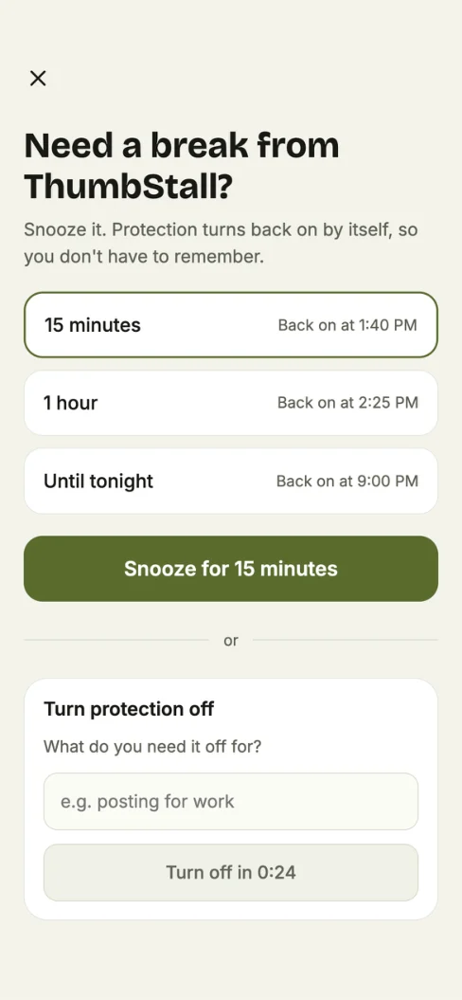

Breathing pause
A calm countdown before any app you pick. Breathe in for four seconds, out for four.
Android · Free & open source · GPL‑3.0
ThumbStall slips a few seconds of breathing room between your thumb and the apps you doomscroll. Most opens happen on autopilot. A short pause is enough to notice, and closing is always one tap.
Try a pause
A real recreation of the pause screen, running the same escalation rule as the app's core engine. Open the app again and watch the wait grow.
Take one slow breath. If you open it, pick how long first.
Open for · available in 8s
You closed it instead 0 times this week
pause = min(base + 5s × repeats, 30s)
Friction, not punishment
A calm countdown before any app you pick. Breathe in for four seconds, out for four.
Repeat opens within an hour wait five seconds longer each time, capped at thirty.
Really need it? Grant yourself 5, 10 or 15 minutes, and that app opens freely until it runs out.
Fifteen minutes, an hour, or until tonight. Protection switches itself back on, so you don't have to remember.
Turning it off asks for a reason and a 24‑second wait. Enough to beat the impulse, never a trap.
Dialer, messages and maps are never paused, even if you add them by mistake.
See time reclaimed and how often you closed instead. No streaks to lose, no shame metrics.
Brand‑specific steps that stop aggressive battery savers from killing protection, plus a health banner if it ever does.
No INTERNET permission at all. No account, no cloud, no analytics, no crash reports.
Anatomy of a pause
A foreground service watches which app comes to the front. Every decision after that is made by a pure Kotlin rules engine with no Android dependencies, tested on the JVM.
UsageStatsManager is polled every 900 ms for the newest foreground app. Detection fails open.
Dialer, SMS and maps always pass, even if they were picked by mistake.
Not a target, snoozed, or inside a session budget? Nothing happens.
OverlayGate blocks launch loops with a monotonic 1 s cooldown per app.
PauseRules adds 5 s per repeat open in the hour, capped at 30 s. The pause screen appears.
:core pure Kotlin
:app Android
Nothing leaves your phone
<!-- everything ThumbStall asks for, and why -->
<uses-permission name="PACKAGE_USAGE_STATS"/> which app just opened
<uses-permission name="SYSTEM_ALERT_WINDOW"/> show the pause on top
<uses-permission name="FOREGROUND_SERVICE"/> keep watching reliably
<uses-permission name="POST_NOTIFICATIONS"/> "protection is on"
<uses-permission name="RECEIVE_BOOT_COMPLETED"/> restart after reboot
<uses-permission name="SCHEDULE_EXACT_ALARM"/> end a snooze on time
<uses-permission name="INTERNET"/> never requestedDesigned to be calm
From the ThumbStall design set. Drag to spin.




Some design screens preview roadmap features such as feed filtering, which are not in v0.1 yet.
Where it's going
v0.1 · shipped
Next
Get it
app-foss-release.apk from Releases.# JDK 17+ and Android SDK 36
git clone https://github.com/suriya4code/ThumbStall.git
cd ThumbStall
./gradlew assembleFossDebug
# → app/build/outputs/apk/foss/debug/Run the rules engine tests with ./gradlew :core:test.